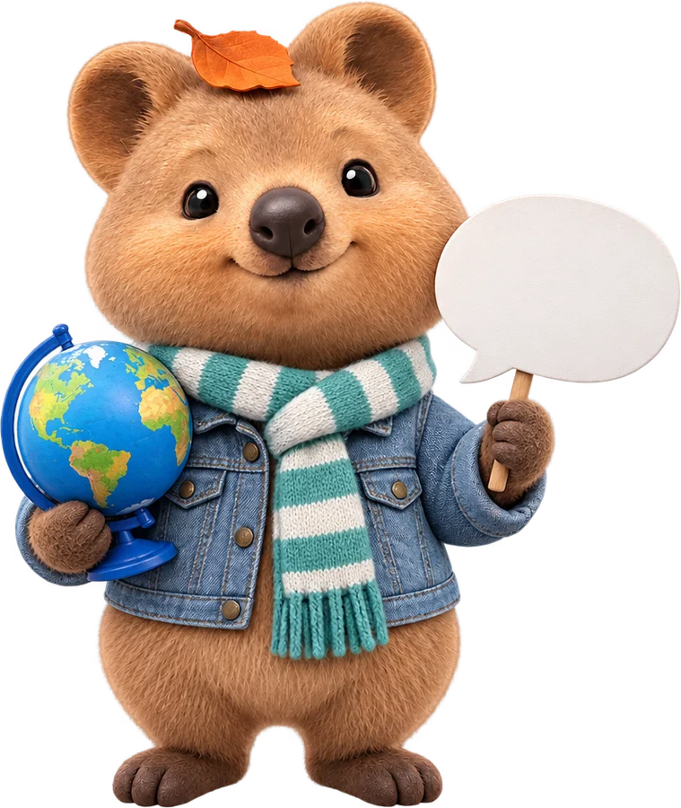
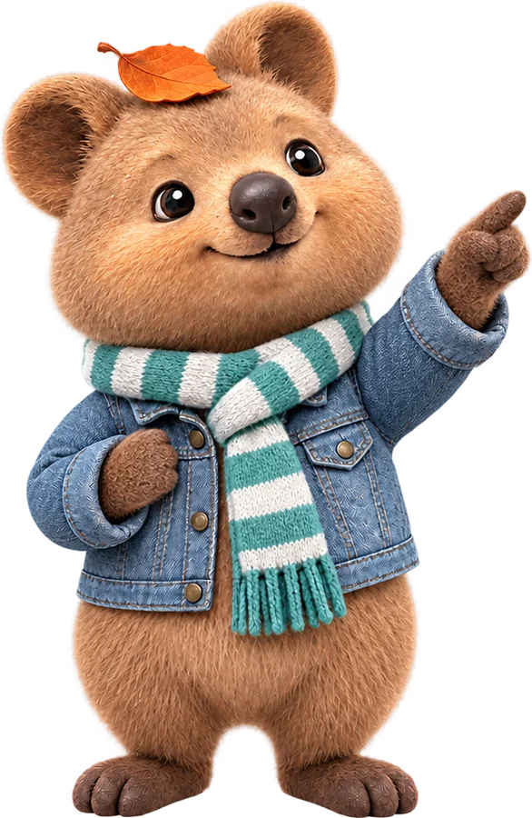

같은 장면을 한국어와 영어로 만들어 봤더니 카메라 연출이 조금 달랐어요. 왜 그랬을까요? 학생들과 함께 생각해 봐요.

카메라 연출 표현에서만 작은 차이가 있었어요. 나머지는 한국어도 충분히 괜찮았어요.
왜 그랬을까요?
그런데 인터넷에 있는 글은 언어마다 양이 크게 달라요.
정확한 숫자는 통계 시점마다 달라요. 크다, 작다로만 봐요.
그래서 카메라 용어 같은 전문 표현은 영어 자료를 더 많이 봤을 가능성이 있어요.

많은 AI 모델은 영어 자료를 압도적으로 많이 보고 배웠어요. 그래도 한국어로 충분히 돼요. 중요한 건 얼마나 구체적으로 쓰느냐예요.